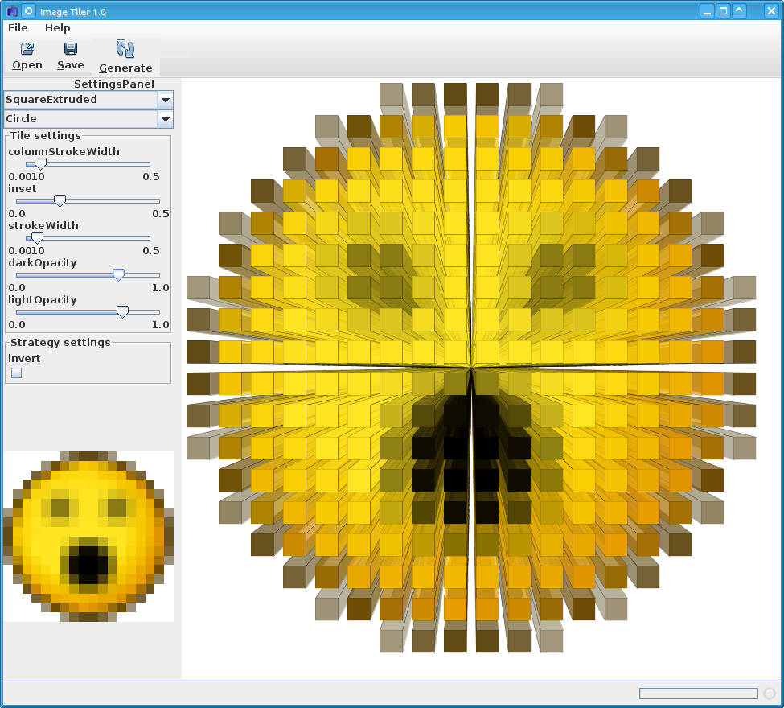

In a nutshell - load a small bitmap image, select a tile type and an order in which to traverse the pixels of the image, configure the tile's properties, click "Generate" and you'll get an SVG where each pixel from the initial image has been turned into an SVG tile. There's lots to be done (including allowing you actually to save the resulting SVG and being able to zoom / pan the SVG display) but I figured that could wait.
JavaMathLib (silly little library I wrote to do 2D vector things). You need Maven to build it (which will pull in all the other dependencies such as Batik)
Read the INSTALL file. Build the core, then the tiles module. The core loads tiles dynamically at runtime by looking for tiles.properties files on the classpath, each of which specifies a package containing tile classes. In theory, you should be able to write your own tile classes (and strategies for visiting the pixels of the bitmap), put them in a Jar with an appropriate properties file and include them on the application classpath and they should be made available. But I'd need to document the API for that (or you could take a look at the existing tiles package and see how it works).

GPL v3
Daniel Rendall (drendall@gmail.com)
You can download this project in either zip or tar formats.
You can also clone the project with Git by running:
$ git clone git://github.com/danielrendall/ImageTiler